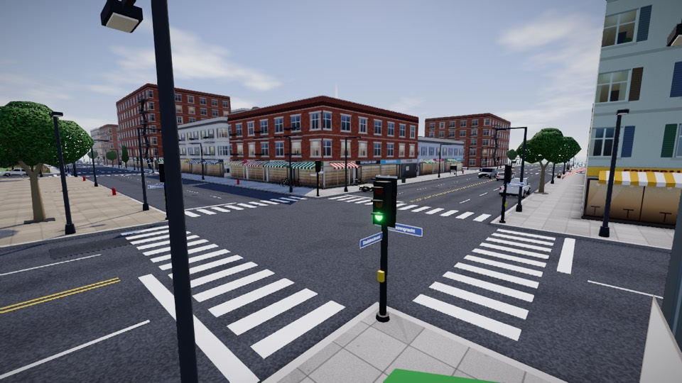
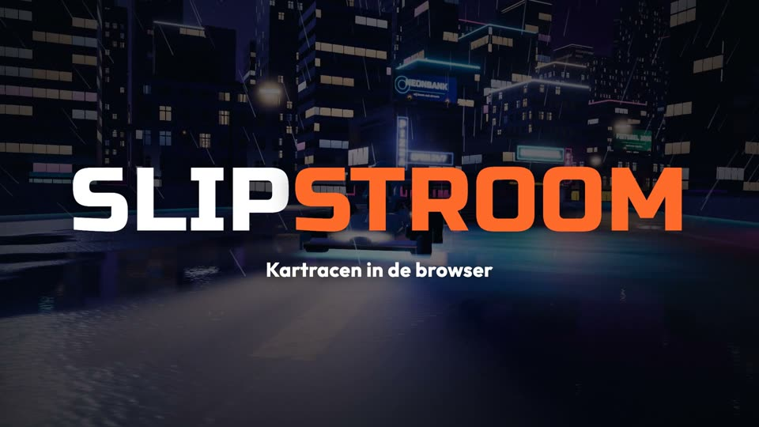

Speel een spelletje
Voor de pauze of een uurtje met je klas. Kies een game, speel alleen tegen de computer, of maak een kamer en deel de code.
2
games
6
spelers max
0€
altijd

Overleven NieuwStadsstorm
Een battle royale in een stad. Spring uit de helikopter, raap wapens op, bouw muren, kaap een auto en blijf als laatste over terwijl de storm krimpt.
- 1 tot 6 spelers
- Bots vullen aan
- Laptop en telefoon

RacenSlipstroom
Een kartracer door een neonstad. Race tegen je klasgenoten of tegen CPU-karts, met items, drift en boosts.
- 1 tot 6 spelers
- CPU-karts vullen aan
- Laptop en telefoon
Er komen meer games
Idee voor een spelletje? Laat het weten via Fout gezien?